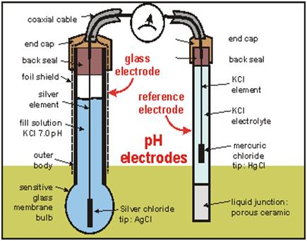
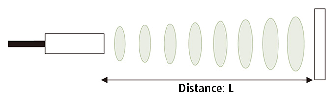

Real Time Clock (RTC) is used to track the current time and date. It is generally used in computers, laptops, mobiles, embedded system applications devices etc. In many embedded system, we need to put time stamp while logging data i.e. sensor values, GPS coordinates etc. For getting timestamp, we need to use RTC (Real Time Clock).
Campbell Scientific pH sensors measure the level of pH in sample solutions by measuring the activity of the hydrogen ions in the solutions. This activity is compared to pure water (a neutral solution) using a pH scale of 0 to 14 to determine the acidity or alkalinity of the sample solutions.
As the name indicates, ultrasonic sensors measure distance by using ultrasonic waves. The sensor head emits an ultrasonic wave and receives the wave reflected back from the target. Ultrasonic Sensors measure the distance to the target by measuring the time between the emission and reception.
An optical sensor has a transmitter and receiver, whereas an ultrasonic sensor uses a single ultrasonic element for both emission and reception. In a reflective model ultrasonic sensor, a single oscillator emits and receives ultrasonic waves alternately. This enables miniaturization of the sensor head.
The 165D6042P003 module measures the turbidity (amount of suspended particles) of the water.
By using an optical transistor and optical diodes, an optical washing machine sensor measures the amount of light coming from the source of the light to the light receiver, in order to calculate water turbidity.